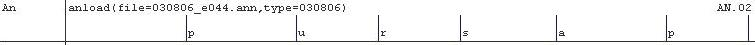
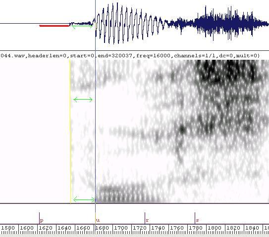

Disclaimer: This is a tutorial I wrote for work, it might be helpful, it might not...
Recording Voice Talent
Chunking : Using Cool Edit
Segmenting : Using SFS
SFS tutorial
Changing Dictionary & Scripts
List of Contexts
Difficult Segments
Prosidy : Using SFS
next...
SFS is a free program that allows linguists to view a sound file and make annotations to it (it also has other features). The program was developed by Mark Huckvale at UCL (University College London, England).Installation 10min
Today we will just use the files in SFS tutorial files which you have put on you desktop.
Open SFS tutorial files Double click on the file named e044.sfs. A window entitled like this will open: You will see three items in the list, two ANNOT (annotations), a SPEECH file. On the tool bar there are two icons with blue sound waves (circled in red above), click on either. (The first is to display only the items you have checked, the second is to display all items. If you haven't checked any of the boxes all items will open.) A window entitled e044.sfs - Eswin will open. This is where we segment the sound files.
Click on the wave and spectrogram buttons (circled in green above)
Next, click on the Annotation menu (circled in pink above). Click on Create/Edit Annotations (see picture below). Click OK in the Annotation window (the annotation name should be automatic).
In the bottom right (see picture below) you can see the position of the left cursor and the right cursor. You can also see the length of the selected interval (circled in red below), this will come in handy later. Circled in yellow is the total length of the sound file.Click your left mouse button at 1.5 on the Time (s) axis on the bottom of the window Click your right mouse button at 2. (As shown in the window below) Hit "z" on your keyboard. (Z for Zoom) This brings you to a viewing range of about 500 miliseconds, which is about right in order to see the details of the wave form, yet still see the larger patterns in the spectrogram that will show only from a distance.
The following table shows you the parts of the Eswin window.
Word Tier Words speaker read (script) Segment Tier Initial alignments made by an autosegmenter  Soundwave Useful for finding silences and vowel transitions. Spectrogram Primary evidence for aspiration, nasals, fricatives and stops. release, aspiration, r-colored vowel, difuse noise, high-frequency noise, silence, F2 (high-low), F1(front-back), F0 (voicing band) Segment Tier (open for editing) Where you move the segment boundaries.
Your primary mission is to find the boundaries between segments, if you have trouble (and you often will) you can refer to the Segment Guide for tricks to find certain segments in certain contexts.
Take a quick look at the picture above. In the soundwave and spectrogram sections we can a bunch of colored circles. These are briefly explained in the spectrogram section. We will refer back to these cirles during our tour of the file we have opened for editing. (e044.sfs)
Go back to your window entitled e044.sfs - Eswin
- Click once with your left mouse button anywhere in the white space before the red "p" (in the bottom segment tier).
Context: pause(#:) | voiceless.stop(p) Click here first
We want to find a boundary between a pause and a voiceless stop. You might already be gigling to yourself if you know that a voiceless stop is mostly silence :) We have to decide how much of that silence we should put into our "p." Here is a general rule: voiceless stops preceded by a pause should have as much silence as voiceless stops surronded by segments. You have to look in the rest of the file to find an average amount of silence to include. In this example just follow these instructions:
- Hold down the "Ctrl" button and push your right arrow one time. This will put the blue cursor automaticaly on the "p" line so you can change its position.
- Next, hold down the Shift button and push your right arrow repeatedly until the "p" is at 1.6098 seconds (you can find the position of the blue (left) cursor as discussed previously
- Hit "o" once.
Context: voiceless.stop(p) | voiced.continuant(u)
Congrats! You've just placed your first segment :) Now we have to find out where the "p" ends and the "u" begins. In the picture on the right you can see that we will put the prevocalization into the "p." The prevocalization shows as a shadow in the voicing band. This is indicated in purple.
- Hold down the "Ctrl" button and push your right arrow one time. This will put the cursor automaticaly on the "u."
- Hold down the Shift button and push your right arrow until the "u" is at 1.6816 seconds.
Context: vowells(u) | voiced.fricatives()
Now lets find the end of the "u" and the start of the "r." Nearly all "r" consonants will have an r-colored vowel before them. The brown cirles on the wave form show where to look for the "u." The green cirles show the transition to an "r." You can see the little spike in the middle of the period gets small and smaller until its gone in the "r." This vowel is in fact "u" only for about 30ms (miliseconds).
Notice the frication of the "r"(indicated in turqoise). We dont want frication in our vowels. We try to keep vowels as "pure" as possible. Meaning, little frication, little r-coloring as possible. You will probably have to listen to vowels more often than any other type of segment. We will give you some tips for listening later on.
All types of "r" are pretty hard to spot and to segment consistantly. You might be tempted to put the voiced area into the vowel (indicated in purple), but "r"s are voiced. That there is frication and r-coloredness should deter you from this :) Do the following in the file your working on:
- Hold down the "Ctrl" button and push your right arrow one time. This will put the cursor automaticaly on the "r."
- Hold down the Shift button and push your left arrowuntil the "r" is at 1.7333 seconds
- Hit "o" twice.
Context: voiced.fricative() | voiceless.fricative(s)
This is a French "r" so it is actually a fricative // rather than an approximate // (English) or a flap // or trill //(Spanish). You will have to learn different cues depending on the phonetic realizations of "r" in different languages. This "r" will follow the patterns of a voiced fricative. Because the "r" is preceded by a vowel it will be at least partly voiced. Because it is followed by an "s" it will probably devoice near the end.
The devoiced section of this "r" is indicated in purple. Because the "r" devoices and the "s" is also voiceless it can be very difficult to find where one ends and the other begins. An "s" always has a dark splotch of high-frequency noise at the top of the spectrogram. The amplitude difference between "s" and any other fricative also might help you find the boundary. (Indicated by the green arrow on the wave form.) Do the following in the file your working on:
- Hold down the "Ctrl" button and push your right arrow one time. This will put the cursor automaticaly on the "s."
- Hold down the Shift button and push your left arrow until the "s" is at 1.7884 seconds
- Click at the "u" with your right mouse button (green cursor).
- Click in the middle of the "s" (around 1.8) with your left mouse button (blue cursor).
- Hit the space bar twice. You should be able to hear a bit of the "s" after the "r."
- Move the blue cursor back to the "s" boundary. (Ctrl-left arrow)
- Hit the space bar twice. You shouldn't be able to hear any "s."
Context: voiceless.fricative(s) | voiced.continuant(a)
Finding an vowel after an "s" is often very easy. Usualy the only cue you need is where the sine wave starts. For all boundaries between a voiceless element and a voiced we leave the tiny prevoicing out of the vowel (indicated in purple).
- Hold down the "Ctrl" button and push your right arrow one time. This will put the cursor automaticaly on the "a."
- Hold down the Shift button and push your left arrow until the "a" is at 1.8683 seconds
Context: voiced.segment(a) | stop(p)
Segmenting a vowel and a stop can also be fun. However, the voicing shadow must be left in the following stop.The voicin shadow (indicated in purple) is usually significanly quieter than the vowel and doesnt show any of the vowels formants.
For most vowels (execpt "i") you can see the little spikes in the middle of the period of the sine wave. This indicates that it is part of the real vowel, not part of the residual glotis-fluttering when the glotis stops voicing. The spike is indicated with a green rectangle.
Have a look at your sfs file. Can you find where you want to put the segment boundary? If you dont remember the commands to move the cursor, they are copied here for you one last time ;)
- Hold down the "Ctrl" button and push your right arrow one time. This will put the cursor automaticaly on the "p."
- Hold down the Shift button and push your left arrow until the "p" is at 1.9298 seconds
Lets keep going until the end of this first phrase then we will release you to practice you new skills with the rest of this file.
Context: stop(p) | voiced.fricative()
Finding the boundary between any voiceless stop and a fricative can be extreamly difficult. You need to find where the aspiration ends and the frication begins. You should always listen to ~3 segments preceding and following the boundary.
The best way to find a boundary that isn't visually clear is to gradually change the area you listen to. You should also listen to both sides of the bounary to make sure that you dont hear one segment in the other. Listening to less than ~30mms will probably not help. You will have to listen to a few segemnts, concentrating on the one youre trying to hear. Put your green cursor ~3 segments proceding the boundary, put your blue cursor at a point where you hear both segments, move the blue cursor (left arrow) .5mms closer to the boundary, listen again, move .5mms closer and listen again. When you no longer hear the the second segment listen to the other side of the boundary using the same procedure.
- Hold down the "Ctrl" button and push your right arrow one time. This will put the cursor automaticaly on the "r."
- Hold down the Shift button and push your left arrow until the "r" is at 2.0053 seconds
- Click on the preceding "a" with your right mouse button (green cursor).
- Click in the middle of the "r" (around 2.03) with your left mouse button (blue cursor).
- Hit the space bar twice. You should be able to hear a bit of the "r."
- Move the blue cursor back to the "r" boundary. (Ctrl-left arrow)
- Hit the space bar twice. You shouldn't be able to hear any "r."
- Click on the following "j" with your right mouse button (green cursor).
- Click in the middle of the "p" release (around 1.99) with your left mouse button (blue cursor).
- Hit the space bar twice. You should be able to hear the release of the "p."
- Move the blue cursor back to the "r" boundary. (Ctrl-left arrow)
- Hit the space bar twice. You shouldn't be able to hear any "p."
Context: voiceless.fricative() | voiced.continuant(*)
This particular is voiceless (because of the preceding "p"). Finding this boundary is the same as finding the boundary between an "s" and an "a."
- Hold down the "Ctrl" button and push your right arrow one time. This will put the cursor automaticaly on the "*."
- Hold down the Shift button and push your left arrow until the "*" is at 2.0530 seconds
Context: voiced.continuant(*) | nasal(m)
There will be a short transition where the wave form becomes regular (looks like an "m") and F1 & F2 disapear. We put this transition into the vowel, and start the nasal once F3 disapears and the spectrogram has only faint nasal formants. Nasalization will usually show up half-way through the previous segment and into the following segments (indicated by the blue line around 2200Hz).
- Hold down the "Ctrl" button and push your right arrow one time. This will put the cursor automaticaly on the "m."
- Hold down the Shift button and push your right arrow until the "m" is at 2.1130 seconds
Before we finish this file lets give you some more commands to excersize your independance.
"Ctrl" + arrow keys
By now you probably figured out that you can use the keyboard to move your cursor from segment to segment. Practice a bit: hold down "Ctrl" and push your arrow keys a couple of times in either direction. This is an easy way to surf through the sound file. (Note)
"Shift" + arrow keys
Pushing shift in combination with the arrows will let you move the segment by tiny intervals to exactly where you want to be (well, pretty close).
arrow keys
You can move your cursor without moving a segment. Try holding down the left or right arrow key. This alows you to select exactly what you want to listen to, or puts you in a position to add a segment.
Quick Keys : Playing Intervals
- o
- If you are going to use the keyboard to hop between segments "o" will become your favorite key. "o" plays from the beginning of your screen until the left cursor. We will see how to use this later on in the Listening Section.
- space bar
- The space bar will play the interval between the left and right cursors. If one of the cursors isnt present it will play from/to the end of the screen. If neither is present it will play the entire screen.
- i
- If you are in the middle of a sound file you can listen to what comes before your screen by pushing "i".
- ]
- The left bracket will play what comes after your screen.
Quick Keys : Navigating in the file
- z
- This will zoom in to the interval between the cursors (z for zoom).
- u
- This will zoom out to the previous zoom level (u for up).
- r
- To display the next screen-full of segments hit "r" (r for right).
- l
- To display the previous screen-full of segments hit "l" (l for left).
Quick Keys : Adding, Deleting and Changing Segments
- a
- This will add, delete or change a segment under the blue cursor (a for annotate). If there is a segment under the left cursor, pushing "a" will delete its value. A little information section will open on the bottom bar of the window (circled in blue). Type the segment you want then push Enter.
- b
- This will add, delete or change a segment under the green cursor. This works the same as "a" above.
Mouse button : left
Clicking with the left mouse button places the blue cursor. You can drag a segment by clicking on the little verticle line next to it. This can be useful if the autosegmenter put a segment far from where it should be.
Mouse button : right
Place the green cursor. Useful for selecting an interval for listening.
Listening to one segment usualy useless. This is why we rely mostly on visual cues. That said, here are some strategies we have used.Finding a /j/ or /w/
You can select a part of the file using the left and right mouse buttons. You might want to do this either to listen to the segment or to zoom in. Lets talk about both: zooming listening
Now you've seen some of the considerations to keep in mind when searching for boundaries between segments. But what do you do when the segments listed dont match what you hear or see?? The first ANNOT line is generated from the scripts. By far the most problem is to have pauses (noted with #:) where they shouldnt be, or have no pause noted when it should be there! Here are examples of each: other problmes include, speaker uses a different word. (and situation in spanish) What to do: put an entry in the change scripts file The second ANNOT line is generated from the dictionary. if this has extra segments (in French we had to take out extra schwas, and insert liason consonants) or too few segments you should find the word in the dictionary. this is a rather complicated process. If the speaker says teh word realy different from the dictionary you will be forced to decide either to change hte dictionary entry, or make a multi word for that word. here are the things you need to consider: whatever you decide you must make note of it in the change dict file. note the files that you have identified as involved in this "problem word" if there are trends in the speaker (for example our spanish speaker was fifty fifty on english "r" and spanish "r" in english words. if a generaliztion such as this linda and the team should decide which group (english or spanish "r") should be in the dictionary, and which should be made into mutliwords. general problems should be caught as soon as possible after segmenting begins. or even before inorder to reduce the amount of backtracking we have to do.
Voiceless Stops : After a Pause
- Basic Info:
- Voiceless stops consist of silence and a burst.
- Important:
- A voiceless stop will start in the silence that precedes the segment. To find the length of silence you need to look at other voiceless stops in the file and use an average of their lengths.
- Waveform Cues:
- The red line indicates where you should look for silence.
- Spectrogram Cues:
- The green lines indicate the difuse noise that is characteristic of aspiration.
- The yellow line indicates the release of the stop.
- The blue cursor indicates the onset of the vowel.
- Auditory Cues:
- NA
Here is an example of a /p/ from our first file:

Voiceless Stops : Word Internally
- Any thing shorter than 30mms is too short. There will be times when you will encounter really short segments. The first thing you should do is look in the instructions file pertaining to the language you're segmenting, next look in the general instructions file. If there are no established instructions for what to do in this exact context ask Linda. Record the instructions she gave you in the instructions file in the following format.
Adding to the List of Instructions
Use this format when editing the instructions file.
Language: English Date: YY-MM-DD Segment: d Context: n d s Instructions: (copy instructions Linda gave you here)
Time between the release of stops' closure until the vocal folds start vibrating. The amount of aspiration on voiceless stops will vary by language. (English has a lot, Spanish has little)
The descriptions indicate what type of segments this information applies to. The letter in parenthesis refers to the exact segment being discussed. In the first example the information can be applied to all voiceless stops, and we are discussing /p/ in particular.
Using Ctrl + arrow key only works when you have a red segment tier open for editing at the bottom of your window.
This is a dark band on the bottom of the spectrogram that indicates voiceing.
Unless a segment is specified as -nasal the velum will open in antisipation of the nasal consonant and stay open until it has to be closed (ie, a segment that is specified as -nasal or silence). In this example the E: is assumed to be -nasal since nasalization is a contrastive feature for french vowels, or perhaps the velum closed in the middle of the E: to faciltiate making the voiced uvular trill .
Nasalization is a bit difficult to identify on the spectrogram but it usually shows up as faint formants at around 250, 2200 and 3500Hz (See Speech Sounds and Features, Gunnar Fant (p27) and A Course in Phonetics, Peter Ladefoged (p201) for more info.). You will probably be able to hear nasalization better than you can see it. Finding nasaliziation will be key when you have a string of liquids and nasals. (Both have similar wave forms and faint spectrograms.)